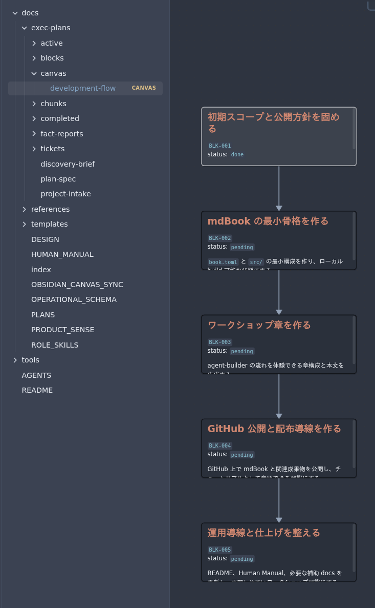
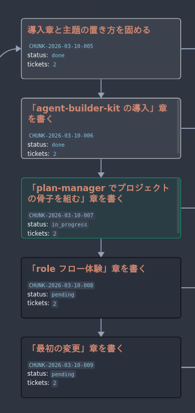
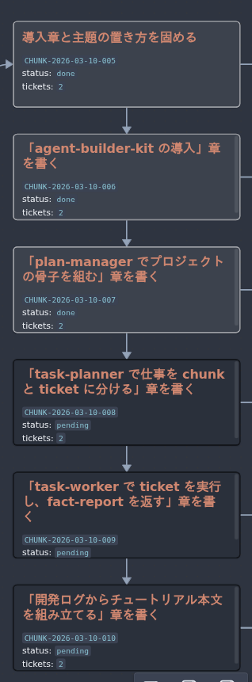
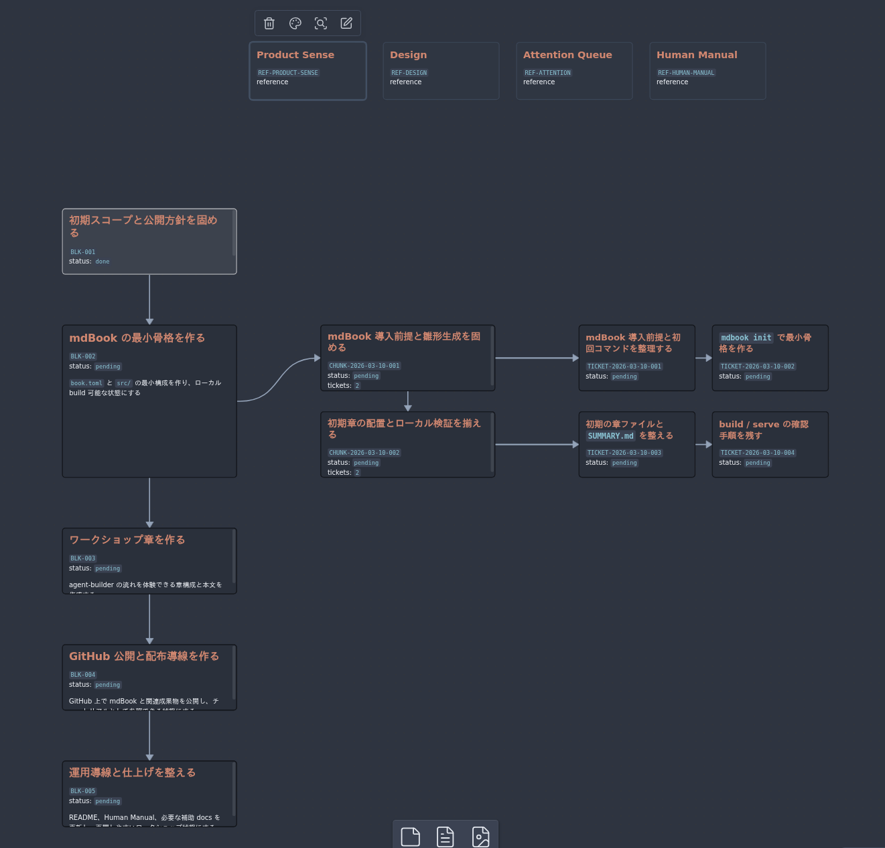
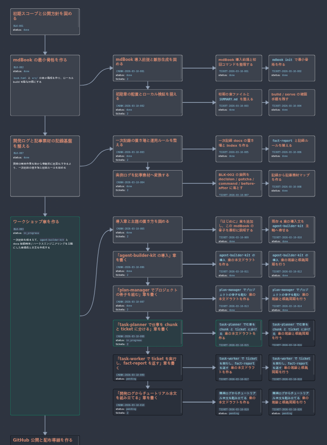

はじめに
ようこそ、Agent-builder-kit のチュートリアルへ。
この mdBook は、agent-builder-kit で構築した AGENTS.md と docs/ を土台に作成しました。この過程を記録し、実際の成果物へどのように着手し、どう進めたかをチュートリアル形式で見てもらうことで、この mdBook の開発フローを追体験してもらうことが目的です。
制作および開発フローは、plan-manager が block を決め、task-planner が chunk と ticket に落とし、task-worker が実装し、必要なら reviewer が確認する流れになります。
このチュートリアルで扱うこと
agent-builder-kitを前提にした docs 駆動の進め方AGENTS.mdとdocs/exec-plans/を使った役割分担- mdBook を題材にした最小成果物の立ち上げと記録の残し方
- Obsidian の
.canvasと連携した開発フローの視覚化 - ハーネスエンジニアリングの一部である、タスクの細分化と境界分離の進め方
このチュートリアルで扱わないこと
- mdBook の全機能を網羅すること
- 一般的な AI 開発論だけを抽象的に語ること
- ハーネスエンジニアリングで語られる CI、カスタムリンター、厳密な境界分離を支えるレイヤードアーキテクチャを、この段階で詳細に実装し切ること
mdBook はここでは器です。器を作りながら、agent-builder-kit と、その土台にある docs 駆動開発 / ハーネスエンジニアリングの実際を一緒に確認していきます。
参考記事
- 「人間はコードを1行も書かない」という縛りで5ヶ月間プロダクトを作り続けた結果 ― ハーネスエンジニアリング | Qiita
- ハーネスエンジニアリング：エージェントファーストの世界における Codex の活用 | OpenAI
agent-builder-kit の導入
まずは agent-builder-kit を用意します。公開後はここに GitHub の公開 repo リンクを置く予定です。
現在はまだ公開前です。GitHub へ公開したあとで、この導線は同一 repo の実 URL に差し替えてください。
新規プロジェクトを開始
Codex アプリで新規プロジェクトを立ち上げ、空のルートディレクトリを用意します。
Obsidian をまだ導入していない場合は、この段階で先に入れておきます。
公式サイトから Obsidian をインストールし、起動後に Open folder as vault を選んで、この project のルートディレクトリを Vault として開いてください。
Obsidian で project を開くと .obsidian/ が生成され、.canvas を使った開発フローの可視化も扱えるようになります。
agent-builder-kit を使った初期化では、次の 3 つがルート下に並ぶ状態から始めます。
.
├── .obsidian/
├── agent-builder-kit/
└── docs-builder.toml
.obsidian/: ノートアプリの Obsidian でこのプロジェクトを Vault として開くと生成されるファイルです。agent-builder-kitには.canvasと同期する Skill が同梱されており、開発フローを視覚化するコア機能でもあるため、Obsidian との連携を強くおすすめします。agent-builder-kit/:AGENTS.mdや構造化したdocs/を初期テンプレートとして展開するパッケージです。docs-builder.toml: builder が読み込む設定ファイルです。生成する docs 構成、planning layout、profile、add-on pack はこのファイルで決まります。agent-builder-kit内にあるdocs-builder.toml.exampleを、プロジェクトに合わせて編集してからルート下へ配置してください。
Obsidian の準備としては、ここで Vault として開ければ十分です。
.canvas の見方や、planning docs とどう同期されるかは後続の chapter で扱います。
パッケージの展開
Codex セッションを開始し、エージェントに agent-builder-kit を展開してもらいましょう。
例:
agent-builder-kit/PACKAGE_CONTENTS.mdと
agent-builder-kit/README.mdを読んでガイドに従ってください
展開が済むと、元のパッケージである agent-builder-kit を削除するか残すか尋ねられると思うので、不要であれば削除してください。
.
├── .agents/
├── .obsidian/
├── agent-builder-kit/
├── docs/
├── tools/
├── AGENTS.md
├── docs-builder.toml
└── README.md
準備はほぼ整いました！
ただし最後の注意点として、Codex アプリでは現在、セッションを開始した後に生成された Skill が即座に反映されないため、一度セッションを閉じて削除してから Codex アプリを再起動し、その後 新しいプロジェクトの追加 を行って新しいセッションを立ち上げるようにしてください。
$ コマンドで次の Skill が候補に上がれば、準備は完了です。
Obsidian Canvas Sync
Plan Manager
Reviewer
Task Planner
Task Worker
これらのSkillを実際にどう使うかは後述のチャプターでお見せします。
公開後は、この mdBook 自体も同じ repo の GitHub Pages から読めるようになります。
つまり読者は、repository と tutorial site を行き来しながら agent-builder-kit と本文の両方を追える構成になります。
注意点
・すでにプロジェクトが進行中の場合
AGENTS.md および docs/ が存在するプロジェクトにおいては、docs-builder.toml を以下にすることで統合モードで展開できます。
[project]
mode = "migration"
ただし、すでに十分な .md が存在しドキュメントが膨大な場合は、完全な移行ができない恐れがあります。その場合は閉じたフォルダ下に展開したうえで現行 docs/ をバックアップし、移行タスクを細分化した上で進めてください。実験的な mode であるため、動作は保証できません。
・Claude環境下
未定義であるため保証できませんが、実体は Markdown と Python script 中心であるため、強依存はなく CLAUDE.md や tools/codex-skills/ に対する手動による最適化を行えば機能する見込みです。
・WSL環境でのObsidian
Windows 側の Obsidian から WSL 上のプロジェクトフォルダへは直接アクセスすることはできません。Linux 版 Obsidian をインストールし、WSLg で動作させてください。
Windows11 + WSL で Obsidian を快適に使うまでの試行錯誤 | Zenn
plan-manager で骨子を組む
セッションの開始
最初にやることは単純です。$ コマンドで、展開された Skill の中から plan-manager を選んで呼び出すだけです。
Codex アプリとの同期がうまくいっていれば候補に出るはずです。
では、この mdBook を作るにあたって最初に投げた言葉を見返してみましょう。
$plan-manager 環境を構築したところで、何もないんだけどどうすればいい？
こんな戯言でうまくいくとは思えませんが、実際これは覆すことのできない過去の出来事なので弁明の余地はありません。
しかし docs-builder.toml に何をやりたいかを書いていたのは幸運でした。
request = "何もない新規リポジトリから、agent-builder を使って mdBook のワークショップ記事サイトを作りたい。ワークショップ自体で plan-manager -> task-planner -> task-worker の流れも体験できるようにする。"
summary = "agent-builder の実運用を題材に、mdBook でワークショップ記事サイトを構築するプロジェクト"
これを足掛かりにして、`plan-manager` は以下のように返答しました。
plan-manager として、環境構築済み / mdBook 未着手の現状を planning docs に反映しました。
project-intake.md (line 11) に追加ヒアリングを記録し、
～中略～
docs/exec-plans/canvas/development-flow.canvas も再同期済みです。
次に BLK-001 を閉じるため、以下だけ決めたいです。推奨はすべて「最小で始める」です。
1.初回ゴールはローカル完結でよいですか。それとも公開導線まで含めますか。
2.章構成は 4 章前後で進めますか。
3.mdBook の立ち上げは手動で作りますか。それとも mdbook init 併用にしますか。
4.必須品質ゲートは mdbook build だけでよいですか。
このようなインタビューに答えて、大まかな骨子を組み立てていきます。
私は 1. については GitHub で公開するのをゴールと設定し、2. については「はい」、3. と 4. については「わからない」と答えました。そもそも mdbook を使うのが初めてだったからです。
plan-manager の役割
plan-manager は、要求整理と上流の計画更新を担当する role です。人間から受け取った要望をそのまま流すのではなく、確認済み事実、仮置き前提、未確定事項を分けながら、後続の role が迷わない骨組みへ整えます。
この段階で主に更新されるのは、次の docs です。
docs/exec-plans/project-intake.mddocs/exec-plans/discovery-brief.mddocs/exec-plans/plan-spec.mddocs/exec-plans/blocks/*.md
使い方はシンプルで、「何を作りたいか」と「いま分かっていること」を plan-manager に渡します。すると plan-manager は、block 単位の実行計画へ落とし込み、必要なら「何を先に決めるべきか」も返します。
たとえば今回の project では、mdBook を作ること自体よりも、agent-builder-kit を使った docs 駆動フローをどうワークショップ化するかが主題でした。そのため plan-manager は、公開ゴール、章構成、記録基盤、公開導線といった論点を block に分けて整理するところから始めています。
大事なのは、ここで細かい実装へ飛ばないことです。まず骨子を作ってから、次の task-planner が chunk と ticket へ分解する流れに入ることで、あとから見返しても追いやすい開発フローになります。
.canvas によるフローの視覚化
agent-builder-kit には、現在の docs の内容を汲み取って開発フローを視覚化する obsidian-canvas-sync が組み込まれています。
このSkillを明示的に呼び出す必要はありません。
plan-manager や task-planner, task-worker がその仕事を終えると、自動的にこの Skill を呼び出し、.canvas ファイルを更新します。
Obsidianでdocs/exec-plans/canvas/development-flow.canvasを開き、進捗フローをリアルタイムに確認しながら開発業務を進めることができます。
このようなチャートがあれば、次に目指すべきブロックと何をやったかが明確になり、どこに新しい機能を追加するかも検討しやすくなるでしょう。
ハーネスエンジニアリングの特徴のひとつであるタスクの細分化は、エージェントの仕事をより高品質にしますが、その分その進捗を文章として追い、脳で処理する人間の負担は増えます。 Obsidianのような専用のViewerを使い、他のドキュメントに目を通す際にも有用です。
以下は、先述した plan-manager とのやり取りを踏まえて生成されたものです。
今はこのように単一のフローですが、次に task-planner を呼び出すことでどう発展するのかにも注目してください。

task-planner で仕事を chunk と ticket に分ける
plan-manager が project の骨子を block にまとめたら、次は task-planner の出番です。
ここでは、その block をそのまま眺めて終わるのではなく、実際に手を動かせる大きさまで分解していきます。
task-planner の役割
task-planner は、block を実行可能な単位へ分ける role です。
読むものは主に plan-spec.md と blocks/*.md、書き出すものは chunks/*.md と tickets/*.md です。
やっていることは単純で、次の二段階に分けて考えると分かりやすくなります。
- まず block を、意味のまとまりごとに
chunkへ分ける - そのあと各 chunk を、
task-workerが独立して進められるticketへ分ける
ここで重要なのは、最初から細かく切りすぎないことです。 逆に大きすぎる chunk や ticket を作ると、次に何をやるかが曖昧になり、role の境界もぼやけます。
task-planner の使い方
使い方は plan-manager と同じで、Codex アプリから Skill を呼び出します。
この project では、次のように依頼しました。
$task-planner ブロック2のチャンク化をおねがい。ちなみに私はmdbookのことはﾅﾆﾓﾜﾗｶﾝ
この一文だけでも、task-planner は block の目的と利用者の前提知識を読み取り、分解の粒度を調整します。
今回は mdbook 初学者向けに進める必要があったため、いきなり公開設定や装飾へ進まず、導入と確認を先に済ませる構成になりました。
block を chunk に分ける
実例として、BLK-002 では mdBook の初期セットアップを扱っていました。
これを task-planner は、次の 2 つの chunk に分けています。
CHUNK-001: mdBook 導入前提と雛形生成を固めるCHUNK-002: 初期章の配置とローカル検証を揃える
この分け方のポイントは、導入と検証を同じ箱に押し込めなかったことです。
先に入口と骨格生成を固め、そのあとで章の配置と build 確認へ進めることで、後続の task-worker が一本道で動きやすくなります。
chunk を ticket に分ける
chunk を切っただけでは、まだ task-worker は動きません。
そこで task-planner は、各 chunk をさらに ticket へ分けます。
CHUNK-001 では次の 2 ticket になりました。
TICKET-001: mdBook 導入前提と初回コマンドを整理するTICKET-002:mdbook initで最小骨格を作る
CHUNK-002 では次の 2 ticket になりました。
TICKET-003: 初期の章ファイルとSUMMARY.mdを整えるTICKET-004: build / serve の確認手順を残す
このように見ると、ticket は「1 回の実装依頼として無理なく完結する単位」になっていることが分かります。
役割ごとに言い換えるなら、chunk は人間が進め方を把握するためのまとまりで、ticket は task-worker が手を動かすための最小単位です。
chunk はあとから更新してよい
chunk は一度切ったら固定されるわけではありません。 むしろ、配下の ticket がすべて完了したあとこそ、いまの進捗と計画がまだ噛み合っているかを見直すタイミングになります。
たとえば、当初の chunk を最後まで進めてみてから、
- 現在の進捗と少しずれてきた
- この流れなら別の機能を足したくなった
- 次に進む前に、記録や検証のまとまりを追加したくなった
といったことが起こります。
そういうとき task-planner は、必要な更新が「いまの block の中に差し込む chunk なのか」、それとも「もっと上流で扱うべき新しい block なのか」を見ます。
block の目的に沿った追加であれば、現在の block に新しい chunk を差し込みます。
一方で、目的そのものが増えていたり、公開方針や記録方針のように上流判断が必要なら、task-planner は無理に追加せず、人間へ「これは block 単位で扱ったほうがよい」と返します。
このようにして、あとから必要になった chunk や block、ticket も、それぞれの境界と責務を見ながら適切な場所へ再配置されます。
以下は、chunk 更新前と更新後のイメージです。
更新前: 仮決めしていた章の構成が、タスク進行とともに噛み合わなくなった

更新後: task-planner に推敲を依頼し、軌道を修正

task-worker へどう渡すか
良い ticket には、少なくとも次の 3 つが入っています。
- 何を達成するかを示す
Goal - どこを触ってよいかを限定する
editable_paths - 完了をどう確かめるかを示す
Verification
これがあると、task-worker は scope を大きくはみ出さずに作業できます。
逆にここが曖昧だと、実装の迷いが増え、あとで review や記録も難しくなります。
task-planner は本文そのものを書かない代わりに、次の role が迷わないための枠組みを整える仕事をしています。
.canvas で分解後の姿を見る
chunk と ticket に分解されると、Obsidian の .canvas でも流れがかなり見やすくなります。
block だけだったときは「何をやるか」しか見えませんでしたが、chunk と ticket が入ると「次に誰が何をするか」が視覚的に追えるようになります。
この project では、task-planner が分解と差し込みを進めた結果として、開発フローが段階的に広がっていきました。
プロジェクト初期:

プロジェクト中盤:

ここまでできると、次は task-worker が各 ticket を順に実行し、fact-report と一緒に事実を返す段階へ進めます。
task-worker で ticket を実行し、fact-report を返す
task-planner が chunk と ticket を切ったら、次に実際に手を動かすのが task-worker です。
この role は、計画そのものを書き換えるのではなく、与えられた ticket の範囲だけを実装し、その結果を事実として返します。
task-worker の役割
task-worker が最初に見るのは、ticket の Goal, editable_paths, Verification です。
つまり「何を達成するか」「どこを触ってよいか」「何をもって完了とみなすか」を見てから作業に入ります。
ここで重要なのは、勝手に plan を拡張しないことです。 必要な変更が ticket の外へはみ出しそうなら、無理に進めず、ticket レベルで上流へ返します。
言い換えると task-worker は、実装担当であると同時に、境界を守る担当でもあります。
task-worker の使い方
呼び出し方はこれまでの role と同じで、Codex アプリから Skill を選ぶだけです。
この project でも、各 ticket を進めるたびに task-worker を呼び出し、対象 ticket の範囲だけを実行していきました。
たとえば TICKET-002 では、次のような仕事を受け持っています。
mdbook initを実行するbook.tomlとsrc/の生成物を確認する- 次の ticket が使いやすいよう、日本語の最小スタブへ整える
ここでは editable_paths が book.toml と src/ に限定されていたため、task-worker はその範囲だけを更新しています。
実装した結果をどう返すか
task-worker は、ファイルを変更して終わりではありません。
実装後は、ticket 本文の実施結果を埋め、さらに fact-report を返します。
fact-report には、少なくとも次のような事実が残ります。
- 何の ticket を実行したか
- どのファイルを変えたか
- どのコマンドを打ったか
- 何が起きたか
- 未解決事項があるか
これがあると、人間はあとから「何をしたのか」を会話ログに頼らず追えます。 同時に、次の role もその ticket の結果を一次記録として再利用できます。
今回の project でも、TICKET-002 の fact-report には、mdbook init --force --title "mdBook Workshop" . を実行して最小骨格を作ったことや、book.toml, src/SUMMARY.md, src/overview.md が生成されたことが残っています。
reviewer が入るとき
reviewer は独立した章にはしませんが、task-worker の流れの中で重要な役目です。
コードや設定を実際に変更した ticket では、task-worker は実装後に reviewer へ handoff します。
この project では、TICKET-002 がその例です。
book.toml と src/ の実ファイルを更新しているため reviewer 対象になり、結果として no findings で通過しました。
一方、docs の更新と確認だけで終わる ticket では、毎回 reviewer を通す必要はありません。
たとえば TICKET-004 では、mdbook build と mdbook serve --open の確認結果を README と fact-report に残す作業が中心だったため、docs-only skip として扱われています。
この切り分けがあることで、review を必要な場所へ集中できます。
結果を上流へ返し、status を昇華させる
task-worker が結果を返したら、それで終わりではありません。
返ってきた ticket 本文、fact-report、review 結果を見て、次に task-planner が ticket を done へ上げます。
さらに、chunk 配下の ticket がすべて done になれば、task-planner は chunk close の材料をそろえます。
そのあと plan-manager が全体の進み方を見て、必要なら block の status も引き上げます。
つまり流れとしては、次のようになります。
task-workerが ticket を実行するfact-reportと review 結果を返すtask-plannerが ticket をdoneに昇格させる- 配下がそろえば chunk を閉じる
- さらに上流では
plan-managerが block の進捗を判断する
この流れがあることで、変更は単発で終わらず、開発フロー全体の進捗へ接続されます。
task-worker の返却物が大事なのは、そのまま上流の status 更新の根拠になるからです。
返ってくるものは変更だけではない
task-worker が返すのは、差分だけではありません。
実行したコマンド、確認結果、未解決事項、review の扱いまで含めて返すことで、あとから見た人が「どこまで終わっていて、何が残っているか」を判断しやすくなります。
だからこの role の本質は、単に実装することではなく、「実装を追跡可能な形で返すこと」にあります。
ここまでできると、task ごとの結果が一次記録として積み上がり、あとからチュートリアル本文へ再構成しやすくなります。
この project でも、task-worker が返した fact-report が、そのまま次の章づくりの根拠になっています。
開発ログからチュートリアル本文を組み立てる
この mdBook は、最初から完成した原稿があったわけではありません。 実際には、開発を進めながら残した planning docs と active logs を材料にして、あとから本文へ再構成しています。
この章では、その変換のしかたを見ます。 なお、この章そのものも最初から人間が立てたものではなく、AI エージェント側から「開発ログをどう本文へ変換したかも章にしたほうがよい」と提案し、それを採用する形で差し込みました。 そういう意味でも、この章はこの project の作り方をよく表しています。
まず、どの記録が何のためにあるかを分ける
agent-builder-kit では、記録を一か所へ雑に積むのではなく、役割ごとに分けています。
そのおかげで、あとから本文を書くときに「何が事実で、何が判断で、何が読者向けの説明候補か」を切り分けやすくなります。
たとえば、この project では次のように使い分けています。
project-intake,discovery-brief,plan-spec- 何を作るつもりだったか、最初に何を前提としていたかを見る
blocks,chunks,tickets- どの粒度で仕事を分け、どこで再計画したかを見る
fact-report- 実際に何をやったか、何が起きたかを見る
decision-log- どの判断を採用したかを見る
gotcha-log- どこで詰まり、どう回避したかを見る
command-log- 手順として再利用できるコマンドを見る
before-after- 変更前後を読者へ見せやすい粒度で拾う
article-source-map- 章ごとに、どの記録を根拠に使うかを整理する
事実と解釈を混ぜない
本文を書くときにいちばん大事なのは、事実と解釈を最初から混ぜないことです。
たとえば fact-report に残っているのは、
- 実行したコマンド
- 変更したファイル
- 成功したこと
- 失敗したこと
といった一次記録です。
一方で、「なぜその判断をしたか」「読者に何を学んでほしいか」は、そのままでは本文になりません。
これは decision-log や article-source-map を使って、あとから意味づけしていきます。
つまり流れとしては、
- まず事実を残す
- 次に、その事実の中から使うものを選ぶ
- 最後に、読者向けの順番へ並べ替える
という順になります。
いきなり本文を書かず、source map を間に置く
この project では、本文を書く前に article-source-map.md を置いています。
これはかなり重要です。
source map があると、
- この章はどの記録を根拠にするか
- まだ何が足りないか
- 補助画像を使うなら何があるか
を、本文と切り離して考えられます。
この一段を挟むことで、「勢いでいい文章を書いたけれど、根拠がどこか分からない」という状態を避けやすくなります。
記録はそのまま貼らず、読者向けに並べ替える
開発ログは時系列で積み上がりますが、チュートリアル本文は必ずしも時系列で読むのが最適とは限りません。
たとえば、この mdBook でも、
- 先に
agent-builder-kitの導入を書く - 次に
plan-managerとtask-plannerの流れを書く - そのあとで
task-workerや記録の使い方を書く
という順にしています。
実際の作業順と完全に一致していなくても、読者が理解しやすい順に並べ替えてよい、ということです。 ただしそのときも、根拠は source map と fact-report に戻れるようにしておきます。
この方法は他の成果物にも転用できる
この章のポイントは、mdBook を書くためだけの手法ではないことです。 成果物が別のアプリやライブラリであっても、
- 開発中に一次記録を残す
- active logs で判断と詰まりどころを整理する
- source map で本文との対応を作る
という流れはそのまま再利用できます。
つまり agent-builder-kit の価値は、単に plan を管理することではなく、「開発の記録そのものを、あとから説明可能な教材へ変換しやすくすること」にもあります。
少し大げさに言えば、開発しながら、そのまま次のチュートリアルの下書きも育てている、という感覚に近いです。
真のハーネスエンジニアリングへ至るには？
ここまでで、agent-builder-kit を使って、要求整理、chunk / ticket 分解、実装、記録、status 昇華までを一通り回せるようになりました。
ただし、これでハーネスエンジニアリングが完成したわけではありません。
むしろ今の kit は、使い始めやすさと汎用性を優先した、最小構成に近いものです。 ここから先は、project の規模や要求水準に応じて、さらに足場を強くしていく必要があります。
そもそもハーネスエンジニアリングとは何か
OpenAI の Harness Engineering で語られているのは、単に agent を賢くすることではありません。 agent が実運用の開発フローに入り込めるよう、評価、レビュー、実行境界、補助ツール、運用上のガードレールまで含めて整えることが主題です。
この見方に立つと、今の agent-builder-kit はすでに入口には立っています。
AGENTS.md、docs/exec-plans/、fact-report、.canvas によって、人間と agent が同じ source of truth を見ながら進める足場はできています。
一方で、スケールさせるにはまだ足りないものもあります。
今の kit ができていること
現時点でも、次の点はかなり強いです。
- role ごとの境界が docs と Skill で明示されている
- block / chunk / ticket / fact-report の流れが固定されている
.canvasで開発フローを視覚化できる- 作業結果が会話ログだけでなく docs に残る
この土台があるからこそ、あとから機能を拡張しても、どこへ組み込むかを議論しやすくなっています。
まだ足りないこと
今の agent-builder-kit は、まだ単一セッション寄りです。
複数の agent が同時並行で大きな project を回すには、次のような点が不足しています。
- 並列化可能な ticket を視覚的に見分ける仕組み
- 別セッションで同時に ticket を回すときの運用ルール
- CI/CD のような自動検証レイヤ
- より厳密な境界分離を支える設計支援
このあたりは、project が大きくなるほど重要になります。
マルチエージェント化するなら
今の流れをそのまま拡張するなら、まずは chunk と ticket の並列化条件をもっと明示するのが自然です。
たとえば、
- 並列実行してよい ticket を
.canvas上で色分けする - 競合しない
editable_pathsを持つ ticket だけを別セッションへ渡す depends_onがない ticket を同時に回す
といった運用が考えられます。
このとき大事なのは、「並列で回せそうだから回す」のではなく、「境界が見えていて衝突しないから並列で回せる」状態にすることです。
その意味で、将来的には .canvas の managed lane に、並列実行可否や担当色を持たせる拡張もありえます。
CI/CD は入れるべきか
結論から言うと、実運用を強めるなら入れるべきです。 今の kit は、ローカル build や reviewer handoff までは扱えますが、継続的な自動検証までは標準で持っていません。
ただし、CI/CD は project 依存がかなり強い領域です。 どのテストを必須にするか、どのブランチ戦略を取るか、どこで deploy するかは、成果物によって大きく変わります。
そのため agent-builder-kit では、汎用性を優先して CI/CD を標準同梱していません。
必要なら project ごとに add-on pack や専用 Skill として差し込む、という考え方のほうが自然です。
同じ文脈で、リンターも標準では抱えていません。
たとえば Rust なら Clippy を導入することで、コード品質をかなり簡単に底上げできます。
ただし、どの lint を必須にするか、どこまで厳しくするかも project 依存が強いため、これも agent-builder-kit の標準範囲には入れていません。
必要なら CI/CD や review ルールと合わせて、その project 用に差し込むべきものです。
レイヤードアーキテクチャや境界分離を強めるなら
同じことはレイヤードアーキテクチャにも言えます。 どこで domain を切るか、どのフォルダ構成にするか、どこまで interface を分けるかは、project ごとの差が大きいからです。
これも汎用テンプレートに固定で埋め込むより、必要に応じて拡張できるほうがよいでしょう。 たとえば、次のような Skill を追加する余地があります。
architecture-creatorfolder-structure-designerboundary-reviewer
こうした Skill があれば、task-planner や task-worker とは別に、「構造をどう切るか」だけを専門に扱えます。
それは、より厳密な境界分離を求める project で特に効いてきます。
どこまで kit に入れるべきか
ここで難しいのは、全部入りにしすぎると kit が重くなり、逆にどの project にも合わなくなることです。
だから今の agent-builder-kit は、意図的に最小寄りにしています。
つまり方針としてはこうです。
- 共通で効くものは最初から入れる
- project 依存が強いものは add-on や Skill で差し込む
- 使いながら必要な役割をあとから増やす
この方針なら、汎用性を保ちながら、実運用に合わせて強くできます。
今後の拡張候補
今の時点で、次の拡張はかなり筋がいい候補です。
- 並列化可能 ticket の可視化
- 別セッションでの multi-agent 実行ルール
- CI/CD 用 add-on pack
- lint / static analysis 用 add-on pack
- アーキテクチャ設計専用 Skill
- 境界逸脱を重点的に見る reviewer 拡張
この章で言いたいのは、「今の kit は不完全だ」ということではありません。
むしろ、今の agent-builder-kit は展開スクリプトと .canvas 同期の Skill を除けば、ほとんどが .md の docs でできています。
だからこそ、この kit を土台にしながら、自分の project に合わせて役割や運用を拡張しやすいのです。
おわりに
このチュートリアルでは、agent-builder-kit を使って、何もないところから mdBook を立ち上げ、その過程そのものを教材として残してきました。
やってみて見えてきたのは、agent-builder-kit の価値は単に plan を作ることではなく、人間と AI エージェントが同じ docs を見ながら、判断、実装、記録を分担できることにある、という点です。
一方で、これで完成ではありません。 並列実行、CI/CD、lint、より厳密な境界設計のように、project が大きくなるほど必要になるものはまだあります。 ただ、それらをあとから差し込めるようにしてあることも、この kit の強みです。
ここまで読んだあとに試すなら、まずは次の 3 つから始めるのが自然です。
- 自分の project に
agent-builder-kitを展開してみる - role や docs 構成を 1 つだけ自分用に拡張してみる
- ひとつの成果物を、実際に block / chunk / ticket で最後まで回してみる
この mdBook 自体も、そうやって作られました。
公開後は、この tutorial site と同じ repo に agent-builder-kit も置かれているので、本文を読みながらそのまま kit 側の資料を見に行けます。
もしここから先へ進むなら、次はあなた自身の project で、この flow がどこまで実運用に耐えるかを確かめてみてください。